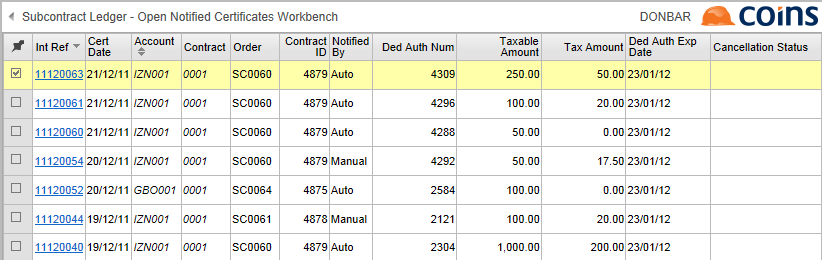
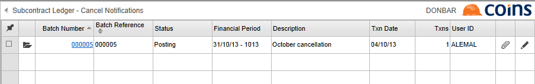

To select a notification for cancellation:
- Go to Open Notified Certificates Workbench.

This shows all open (that is, unpaid) certificates which have been notified to Revenue (even if the deduction author -
- From the Choose Action list, select Select Notification for Cancellation and click
 .
.
In the following cases, you will not be able to select the certificate, and
- If the payment notification method (shown in the Notified By column), is not Auto. The reason for this restriction is that if the certificate has been manually recorded as notified then there could potentially be other certificates and/or invoices covered by the same payment notification. In this case you must cancel the payment notification directly on ROS and then record it in
- If the deduction author
- If the cancellation of the notification for a certificate has already been sent to Revenue, or the certificate is already selected for cancellation.
If the action is run without errors, the cancellation status for each of the selected certificates will be changed to "Selected for Cancellation".
- If the payment notification method (shown in the Notified By column), is not Auto. The reason for this restriction is that if the certificate has been manually recorded as notified then there could potentially be other certificates and/or invoices covered by the same payment notification. In this case you must cancel the payment notification directly on ROS and then record it in
To submit the cancellation requests:
- Go to Cancel Notifications and find the last batch which is not posted. This batch may have status "Unposted" or "Posting".

The transactions in this batch correspond to the certificate notifications that have been selected for cancellation. - You can click the link on the Batch Number column - this displays the batch summary - to check that the transactions are correct.
- On the Cancel Notifications browse screen, select the batch, select the Post Batch action and click .
When the action has completed, Report Status shows a "Post Cancel Notification Batches" report that gives details of the results. If any errors have been received from Revenue, an additional "Payment Notification Cancellation Errors" report will also be prepared automatically, and the errors will be shown in the Error column of the Cancel Notifications transaction browse.
If you receive an error from Revenue
-
Either:
- Correct the problem identified by the error, then on the Transactions tab in Cancel Notifications select the certificate and run Clear Error for Retry.
- If cancellation is not required, remove the transaction from the batch.
- Run the Post Batch action again.
When the Cancel Notification Batch is successfully posted, the selected certificates are removed from the Open Notified Certificates Workbench.
To record that you have cancelled a payment notification manually:
- Cancel the notification manually on the ROS website.
- Go to Open Notified Certificates Workbench.
-
- From the Choose Action list, select Notification Manually Cancelled.
- Click .
NOTE